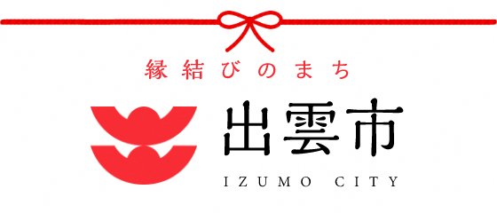
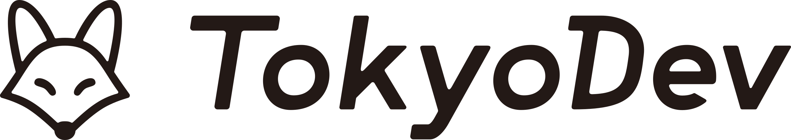

こんにちは世界！
札幌で12年ぶり、2度目ののRails Girlsが開催されます！
Ruby on Rails のすてきな世界を私達と一緒に体験しましょう！
無料のワークショップですので、お気軽にご参加ください。
応募を開始しました！！！
/()までにこちらからご応募ください。
応募が多い場合は抽選となります。ご了承ください。
概要
コーチに教えてもらいながらプログラムを設計して、プロトタイプを作り、コーディングします。
必要なもの
・ノートパソコン
・楽しみたい気持ちとほんのちょっとの好奇心
不要なもの
・プログラミングの知識や経験
・「私が参加して良いだろうか」という遠慮
・プログラミングって難しそう・・・という先入観
| 18:30 - 21:30 |
インストール・デイまずは、参加者同士、お互いに知り合いになりましょう。ご自分のノートパソコンをお持ちください。 それぞれのパソコンにRubyとRailsをインストールし、Rubyプログラミングの最初の一歩をコーチとともに始めてみましょう。 |
|---|
| 9:00 - 10:00 |
レジストレーション、コーヒー金曜日にRuby on Railsのインストールトラブルがあれば、朝のうちに解決しておきましょう。 金曜日にすべてうまく行ったひとは参加しなくてもOKです。9:30ごろからのんびりきてください。 |
|---|---|
| 10:00 - 10:30 |
開会一日の流れの説明。オーガナイザーから一言。 |
| 10:30 - 11:00 |
自己紹介一緒のチームのみんなに自己紹介しましょう! |
| 11:00 - 13:00 |
ワークショップ ー ウェブアプリの構築はじめてのウェブアプリにトライしてみよう！ |
| 13:00 - 13:50 |
ランチ & スポンサーLT |
| 13:50 - 15:10 |
ワークショップ ー ウェブアプリの構築 |
| 15:10- 15:20 |
休憩 |
| 15:20 - 16:30 |
ワークショップ自分流のウェブアプリに変えてみよう！ |
| 16:30 - |
アフターパーティー & コーチLT参加者、コーチ、スタッフによるパーティです。ワークショップで聞き損ねたことや RubyやRailsのこと、ステップアップの方法など、コーチに気軽に質問してみましょう。 |
会場:
パルメイト出雲 4階 パルメイトホール地図
島根県出雲市今市町2065番地
※ 駐車場をご利用の場合、サービス券が利用できる駐車場が限られるのでパルメイト出雲公式サイトの駐車場のご案内をご確認ください。
多数のご支援のお申し出をいただき、ありがとうございました！
Rails Girls Izumo 1st は以下のすばらしいパートナーとの共同開催です。

後援：出雲市
 STORES株式会社
は、「Just for Fun」をミッションに、こだわりや情熱、たのしみによって駆動される経済の発展に寄与することを目指しています。 個人事業者から中規模企業まで店舗を運営する方々にむけて、ネットショップ開設・POSレジ・キャッシュレス決済・オンライン予約システム・店舗アプリ作成など、お店のデジタル化を総合的に支援するサービスを展開しています。
STORES株式会社
は、「Just for Fun」をミッションに、こだわりや情熱、たのしみによって駆動される経済の発展に寄与することを目指しています。 個人事業者から中規模企業まで店舗を運営する方々にむけて、ネットショップ開設・POSレジ・キャッシュレス決済・オンライン予約システム・店舗アプリ作成など、お店のデジタル化を総合的に支援するサービスを展開しています。
 株式会社えにしテックは、ソフトウェア開発、コンサルティング、教育の3つの領域でサービスを提供するテック企業です。「ひと、プロセス、プロダクトをいきいきと」をビジョンに、お客様がデジタルビジネスを継続的に進化していけるよう支援を行っています。
株式会社えにしテックは、ソフトウェア開発、コンサルティング、教育の3つの領域でサービスを提供するテック企業です。「ひと、プロセス、プロダクトをいきいきと」をビジョンに、お客様がデジタルビジネスを継続的に進化していけるよう支援を行っています。
 TokyoDev株式会社 は、オンライン求人掲示板やグローバルなメンバーが集うコミュニティを通じて、国内外に住むソフトウェア開発者の日本でのキャリアスタート・キャリアアップをサポートしています。
 ピクシブ株式会社
は、世の中のクリエイターの方々に対して「創作活動やファンとのコミュニケーションを楽しんでもらいたい」「創作活動を支え、創作文化を刺激していきたい」、そんな想いで、世界中の人々の創作活動を支える事業を展開しています。
ピクシブ株式会社
は、世の中のクリエイターの方々に対して「創作活動やファンとのコミュニケーションを楽しんでもらいたい」「創作活動を支え、創作文化を刺激していきたい」、そんな想いで、世界中の人々の創作活動を支える事業を展開しています。
 株式会社エス・エム・エス
は「高齢社会に適した情報インフラを構築することで人々の生活の質を向上し、社会に貢献し続ける」ことをミッションに掲げ、「高齢社会×情報」を切り口に40以上のサービスを展開しています。
高齢社会に求められる領域を医療・介護・ヘルスケア・シニアライフと捉え、高齢社会で働く方や事業者の方、高齢者ご自身やそのご家族がイキイキと生活できるサポートを提供することで豊かな社会の実現を目指しています。
株式会社エス・エム・エス
は「高齢社会に適した情報インフラを構築することで人々の生活の質を向上し、社会に貢献し続ける」ことをミッションに掲げ、「高齢社会×情報」を切り口に40以上のサービスを展開しています。
高齢社会に求められる領域を医療・介護・ヘルスケア・シニアライフと捉え、高齢社会で働く方や事業者の方、高齢者ご自身やそのご家族がイキイキと生活できるサポートを提供することで豊かな社会の実現を目指しています。
 フィヨルドブートキャンプ
は、未経験からでも現場の即戦力になれるプログラミングスクールです。現役エンジニアや技術コミュニティで実績のあるメンターの指導のもと、プログラマーを目指すカリキュラムに取り組めます。開発現場と同じ進め方で取り組むチーム開発や、ポートフォリオとなるWebアプリ制作を通じて、業界で求められる力を磨けます。受講生・卒業生・現役プログラマーが交流し、学び続けられるコミュニティの場も提供しています。
フィヨルドブートキャンプ
は、未経験からでも現場の即戦力になれるプログラミングスクールです。現役エンジニアや技術コミュニティで実績のあるメンターの指導のもと、プログラマーを目指すカリキュラムに取り組めます。開発現場と同じ進め方で取り組むチーム開発や、ポートフォリオとなるWebアプリ制作を通じて、業界で求められる力を磨けます。受講生・卒業生・現役プログラマーが交流し、学び続けられるコミュニティの場も提供しています。
SmartHRは、人事・労務の業務効率化と、データ活用によるタレントマネジメントや組織のパフォーマンス向上を実現するクラウド人事労務ソフトです。労働に まつわる社会課題をなくし、誰もがその人らしく働ける社会の実現を目指し、働くすべての人の生産性向上を後押しします。私たちは、歴史に残る模範的なソフトウェアをつくる仲間を探しています。フルリモート勤務可能！
株式会社バイタルリードは「交通」をキーワードに、交通計画コンサルティングとRuby on Railsによる自社プロダクト開発を主軸に展開する企業です。弊社では、地域にダイレクトに貢献したい、意欲あるRuby プログラマを随時募集しています。
日本Rubyの会 は、Rubyの利用者の支援とRuby(とRubyのライブラリ)開発者の支援を目的とした一般社団法人です。現在は、ドキュメントの整備や、イベントへの参加協力等を中心に活動しています。
参加費はどのくらいかかりますか？ 無料です。申し込むときにはわくわくした気持ちだけあればいいです。
どのような人が参加するのでしょうか？ コンピュータを使ったことがある女性ならだれでも参加できます。これまでに開催されたRails Girlsイベントには様々な年齢の女性がやってきました。ご自分のノートパソコンをお持ちください。
ワークショップで利用するツールで費用が発生するものはありますか？ ありません。イベント開催中に利用する Heroku 等の利用代金等はすべて Rails Girls Japan にて負担します。
男性も参加できますか？ 参加できます。ただし、必ずウェブアプリを作りたがっている女性と一緒に参加してください。申し込み人数が多い場合はお断りすることがあります。
プログラミングの経験があります。手伝うことはできますか？
はい！Rails Girls Izumo ではコーチとしてお手伝いしてくださる方を募集する予定です。
準備が整い次第このサイトやXなどでお知らせいたします。
 やまもと
やまもと Rina Mishima
Rina Mishima Honoka Taiko
Honoka Taiko Mizuki Ishikawa
Mizuki Ishikawa Yuki Tsuchie
Yuki Tsuchie Akihiro Sada
Akihiro Sada ogura
ogura S.H.
S.H. Keisuke Ito
Keisuke Ito fumika yamabe
fumika yamabe 16bit_idol
16bit_idol